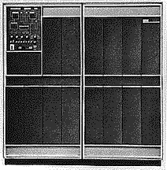

2023-11-08
1401s I Have Known

I got a summer job operating and programming  IBM 1401 and 7070 computers in 1962 and 63
at Universal Oil Products Company in Des Plaines, Illinois.
Our 1401 had one 7330 tape drive, card reader/punch, and printer.
It was used for card manipulation, but mostly as card-to-tape and tape-to-printer for the 7070.
Our machine had a minimum configuration, 1400 (6-bit BCD) bytes of core.
The machine's basic memory cycle time was 12 microseconds; each instruction took a variable length of time
depending on the length of the instruction and the lengths of the operands.
To add two five-digit numbers took 20 cycles, so the machine could do about 4000 such adds per second.
IBM 1401 and 7070 computers in 1962 and 63
at Universal Oil Products Company in Des Plaines, Illinois.
Our 1401 had one 7330 tape drive, card reader/punch, and printer.
It was used for card manipulation, but mostly as card-to-tape and tape-to-printer for the 7070.
Our machine had a minimum configuration, 1400 (6-bit BCD) bytes of core.
The machine's basic memory cycle time was 12 microseconds; each instruction took a variable length of time
depending on the length of the instruction and the lengths of the operands.
To add two five-digit numbers took 20 cycles, so the machine could do about 4000 such adds per second.
The 7070 and 1401 both had assemblers called Autocoder. Our teeny 1401, though, didn't have enough core to use Autocoder, so we programmed it in SPS, the Symbolic Programming System, a much less fancy assembler: fixed card fields, no macros. You loaded the reader with the assembler deck, your source, and pass 2 of the assembler, and hit LOAD. SPS read in, read your program and punched an intermediate file, and stopped. You took the intermediate file from the output hopper and put it behind pass 2, and hit START to complete assembly.
The next summer I got a job at Swift & Company, in downtown Chicago, in their Operations Research department. They had two big 1401s, 12K each. On these we could run Autocoder, and use a primitive debugger called Autotest, which let you patch programs, compare core to the object deck, and even set breakpoints. These machines did payroll, wrote dividend checks, stuff like that. Such applications were written in 1401 COBOL. I was an Autocoder jock though, had my own private library of tape error recovery code, merged in the center pocket, hot stuff.
A few years later at MIT Project MAC I was able to use my 1401 knowledge; MAC had a 4K 1401 used as reader/print for the